CthulhuCard
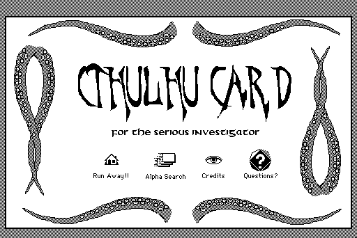
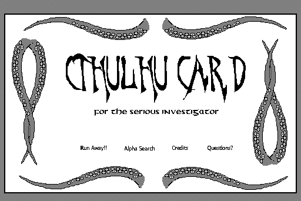
- Visual
- 0.984
- Scenarios
- 6/6
- Script lines translated
- 89/89
A multi-agent pipeline that reverse engineers abandoned software from its files alone, writes a specification, rebuilds a reader from that specification in a clean room, and turns each program into a maintainable web app. Each card shows the original (screenshot from an emulator) next to the modernized version rendered in a browser.
Apple, 1987–2004 · card stacks scripted in HyperTalk. 10 programs recovered and modernized; HyperTalk translated to JavaScript.


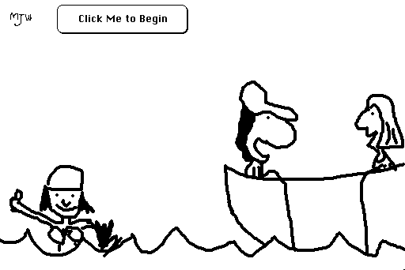
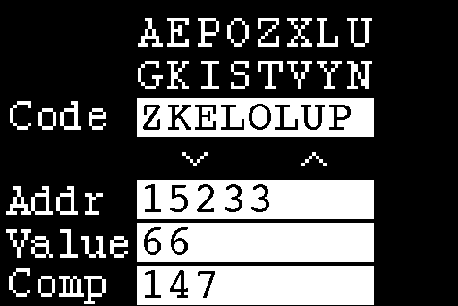
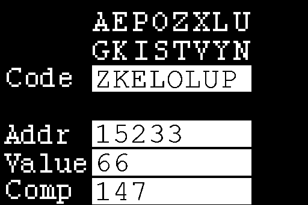
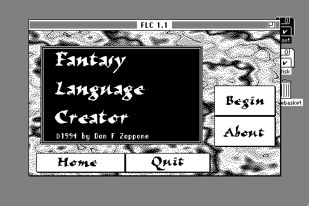
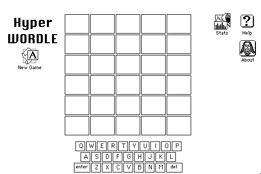
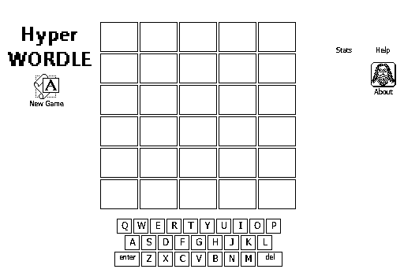
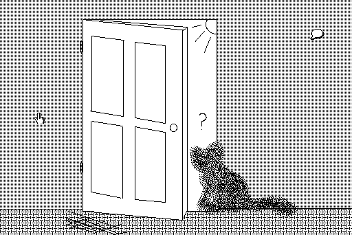
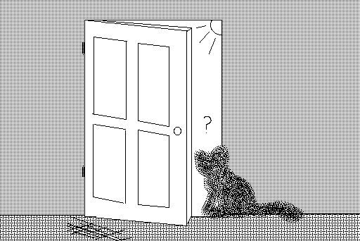
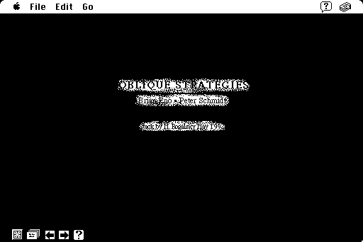
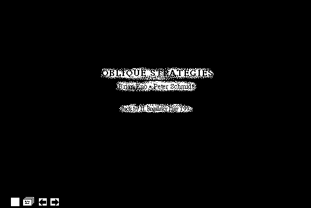
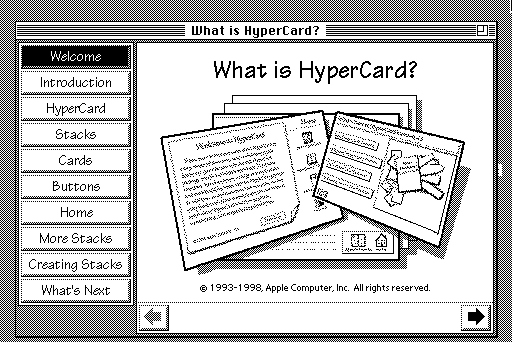
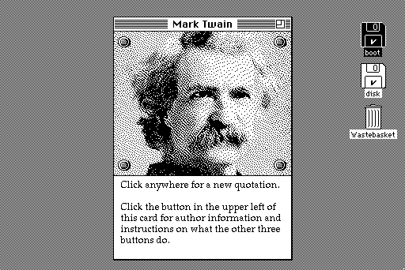
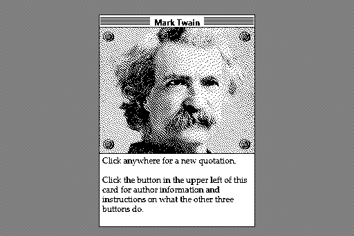
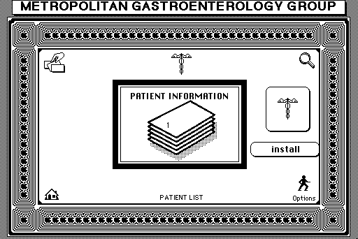
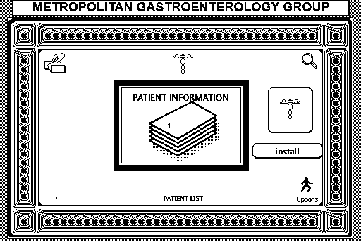
Epic MegaGames, 1991 · MS-DOS text-mode worlds scripted in ZZT-OOP. 8 programs recovered and modernized; ZZT-OOP translated to JavaScript.
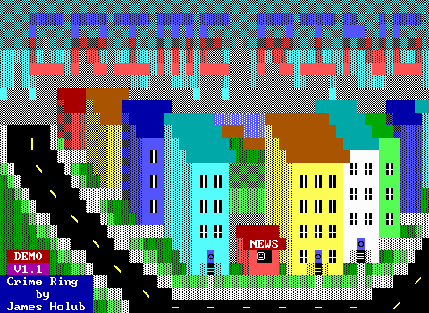
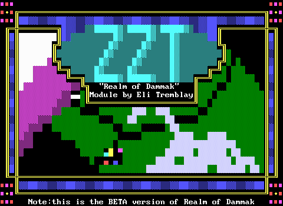
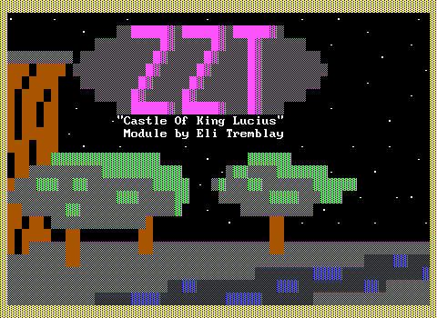
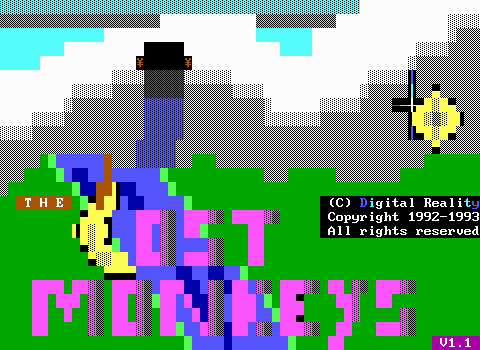
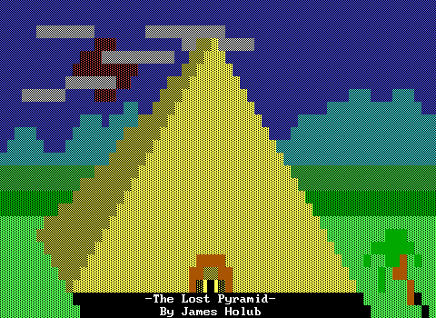
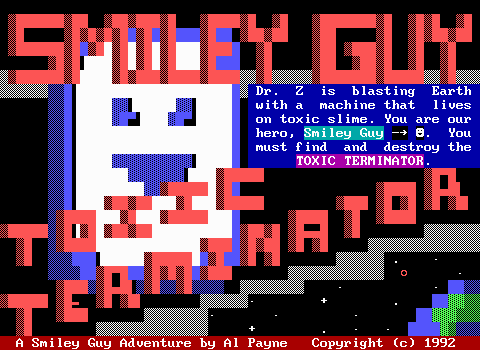